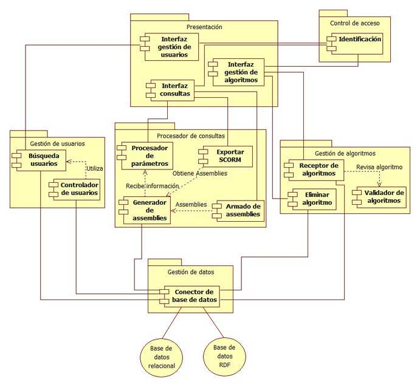
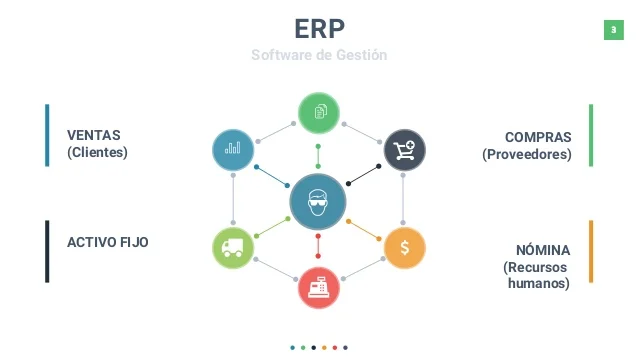

Definición de sistemas web:
Se refiere a un conjunto de sofware o aplicaciones que accedes mediante algun navegador como google, brave, entre otros, y que estos interactuan con el usuario, es decir el usuario mismo puede subir y pedir informacion que esta en la base de datos almacenada

Los componentes básicos:
Se refiere a todos los elementos que trabajan juntos para que de esa forma nos permita el funcionamiento de un sistema web, entre ellos tenemos:
Un diagrama de compomentes:
Vendria a ser una herramienta de modelado visual que muestra los componentes de software del sistema que interactúan entre sí con otros sistemas.
Estos componentes pueden incluir módulos de software, bibliotecas, archivos ejecutables y otros elementos que forman parte del sistema.
La representación gráfica del diagrama de componentes les permite a los desarrolladores y arquitectos de software comprender la complejidad del sistema y planificar su diseño de manera más efectiva.
Tambien se puede utilizar para identificar oportunidades de reutilización de componentes y mejorar la modularidad y la escalabilidad del sistema.
En resumen, el diagrama de componentes es una herramienta importante para el diseño y la comprensión de sistemas de software complejos.
Las aplicaciones empresariales:
Son software (aplicaciones) diseñadas para satisfacer las necesidades de las empresas en términos de gestión y administración de sus operaciones, procesos y recursos.
Estas incluyen software de contabilidad, recursos humanos, gestión de relaciones con los clientes (CRM), gestión de la cadena de suministro (SCM), entre otros.
Y tienen como objetivo mejorar la eficiencia de las operaciones comerciales, aumentar la productividad, reducir costos y mejorar la toma de decisiones.
El uso de estas aplicaciones empresariales, las empresas pueden automatizar y optimizar sus procesos, lo que les permite concentrarse en otras tareas críticas del negocio.
Además, permiten a las empresas mantener registros precisos y actualizados de sus operaciones, lo que les ayuda a cumplir con las regulaciones y normativas aplicables.
En conclusion, las aplicaciones empresariales son una herramienta esencial que toda empresa usa o esta usando ya que busca mejorar su eficiencia, productividad y rentabilidad.
